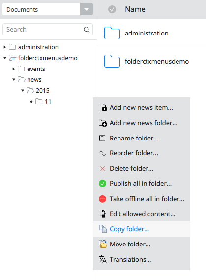
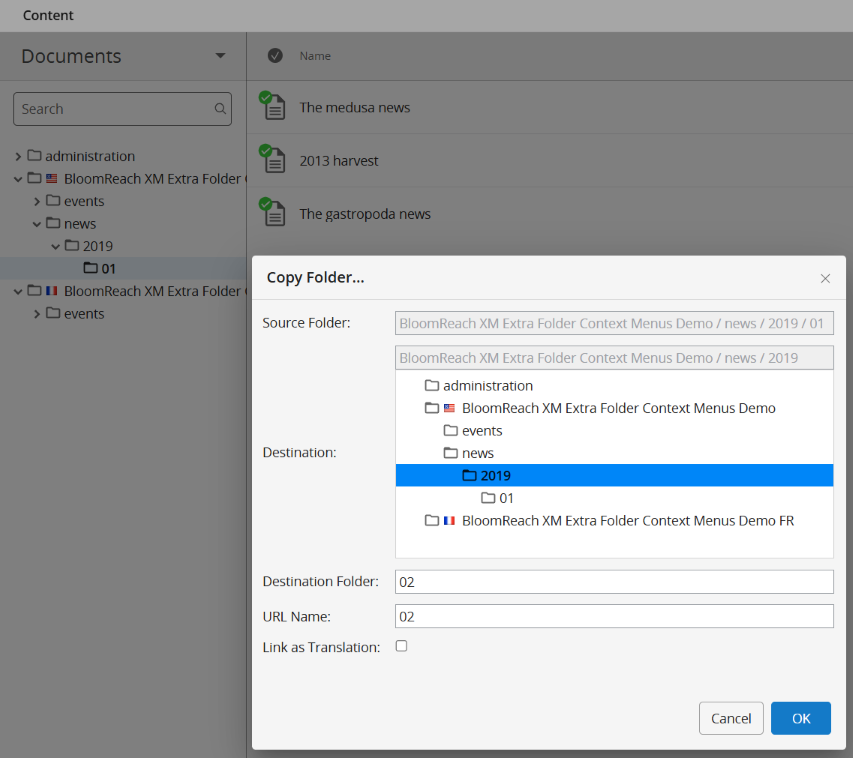
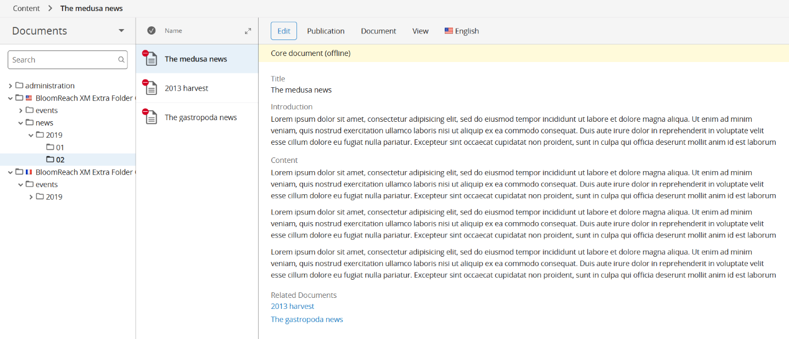
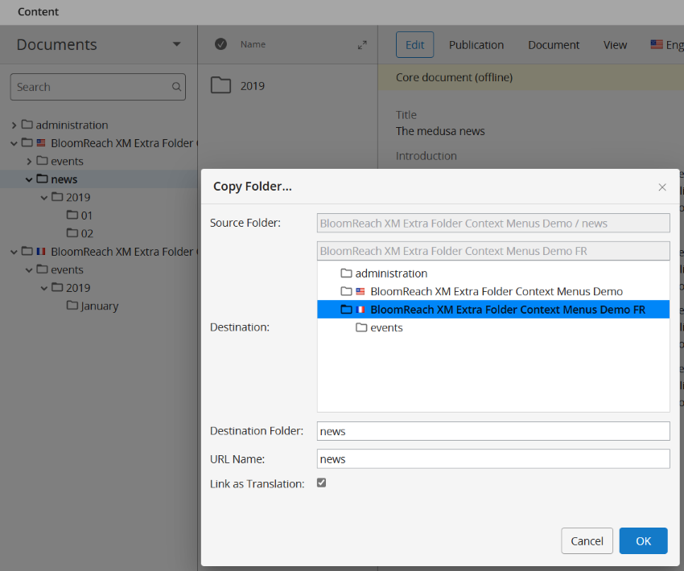
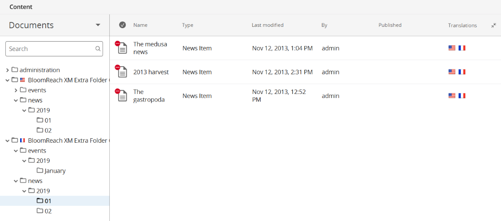
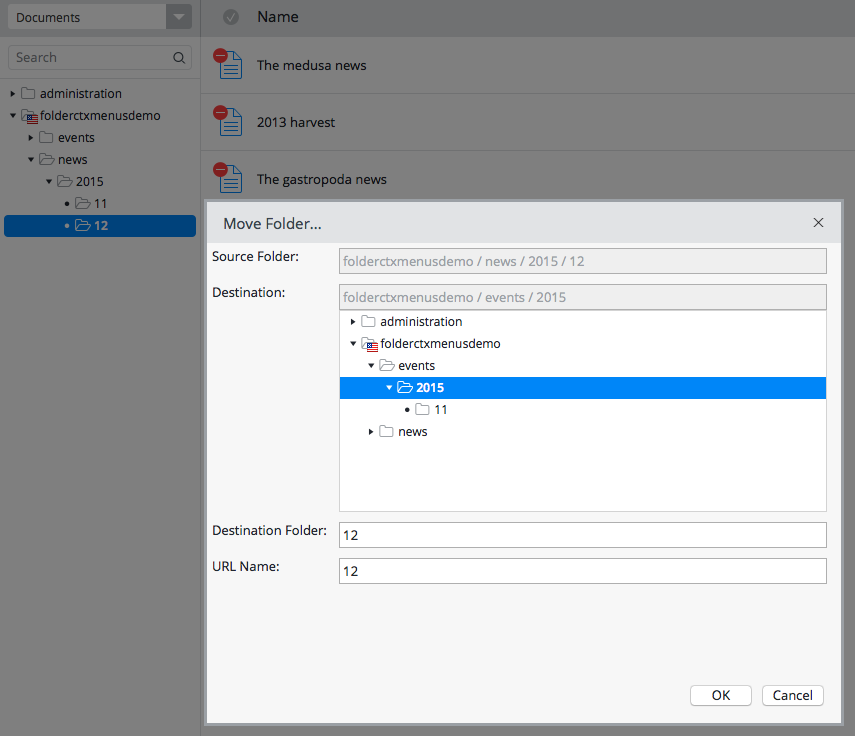
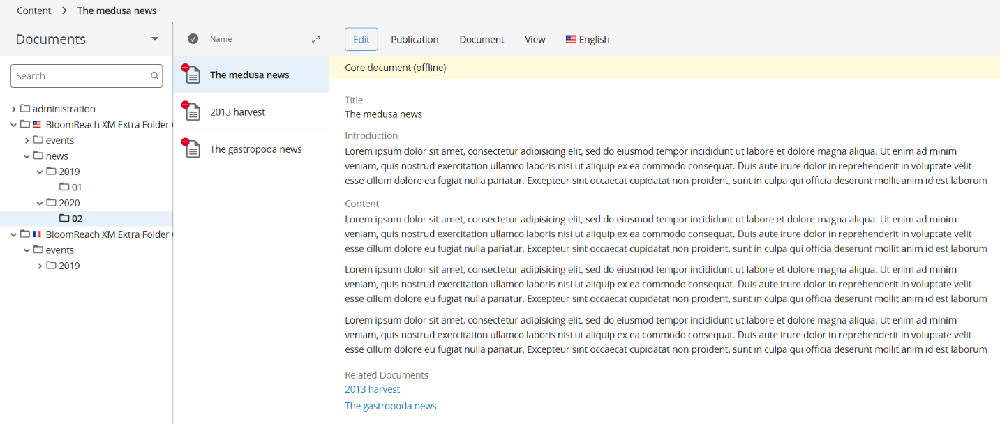

Bloomreach XM Extra Folder Context Menus

Bloomreach XM Extra Folder Context Menus
This project provides extra Folder Context Menu items such as 'Copy folder...' and 'Move folder...' for Bloomreach XM with extensible base implementations for developers.
The best way to explain this feature is probably to show screenshots. After installing this plugin, you will be able to see 'Copy folder...' and 'Move folder...' context menus.

Copying folders
In the Folder Copy dialog, you can select the destination folder, folder name and folder URL name.

Please try to click on the "See Also" links field to open the linked documents. The document links are automatically reset to the corresponding copied documents under the same copied root folder if the linked document was under the same root folder.

Copying and translating folders
When copying translated folders, there is the option of linking the copied folders and documents as translations.
This makes sense when copying between root folders that have different locales but are translations of each other.
The default value for this option can be configured with default.linkTranslation: true (false by default)
on the folder configurations in /hippo:configuration/hippo:workflows/threepane/.

As you can see from the flags, the documents have been linked.

Moving folders
In the Folder Move dialog, you can select the destination folder, folder name and folder URL name.

Please try to click on the "See Also" links field to open the linked documents. In this case, the document links are not affected by moving the folder because all the internal document lnks are based on node identifiers (UUIDs).

Progress indicator
When copying or moving folders with many items, a progress indicator is displayed showing:
- The current item count and total (e.g., "Processing 45/293 items")
- A visual progress bar with percentage complete
- The path of the item currently being processed
- Estimated time remaining
- A cancel button to abort long-running operations
This provides visibility into the operation's progress and allows users to cancel if needed.
Operation behavior differences
Copy and move operations behave differently due to their underlying implementation:
- Move uses JCR's native
Session.move()which is atomic - the entire folder tree is relocated instantly regardless of size. The progress bar tracks post-move processing (path recomputation), not the move itself. - Copy creates nodes one by one, so progress accurately reflects the copying process. Larger folders take proportionally longer.
For small folders or move operations, the dialog may show the completion summary immediately because the operation finishes before the progress display fully renders.
Cancellation behavior
When an operation is cancelled:
- Copy cancelled: Already-copied content remains at the destination. The plugin automatically runs post-processing on partial content: documents are marked as unpublished, internal links are updated, and translation IDs are reset. You may want to review the destination and either delete the partial copy or complete it manually.
- Move cancelled: Since move is atomic, the folder has already been fully relocated. Cancellation only affects post-move path recomputation. Content is safe and accessible.
The completion summary shows how many items were processed before cancellation (e.g., "Cancelled after copying 45 items").
Post-processing steps
After copying, the plugin performs important cleanup:
- Take documents offline: Copied documents are marked as unpublished to prevent duplicate published content on your site.
- Reset internal links:
hippo:docbasereferences within copied content are updated to point to the corresponding copied nodes. - Reset translation IDs: New UUIDs are generated for
hippotranslation:idproperties to prevent translation conflicts (unless linking as translation is enabled).
These steps run automatically, even after cancellation, on any content that was successfully copied.
Known limitations
Move operation dialog may close before summary is viewed: In rare cases, the progress dialog may close automatically after a move operation completes, before the user has a chance to review the summary. This occurs because:
- Move operations delete the source folder from JCR
- When
session.save()persists changes, JCR fires repository events - The CMS UI may respond to these events by refreshing, which closes modal dialogs
This is a CMS framework behavior, not a bug in this plugin. The operation completes successfully; only the summary display is affected. Copy operations are not affected because they do not remove the source folder. All operations are logged to the server logs with operation ID, user, source path, destination path, and item count for traceability.
Programmatic Folder Copy and Move
It is also possible to use the library in programmatic way (e.g, in Java code or Groovy script) to copy or move a folder. In that case, refer to the Installing Only the Common module of Bloomreach XM Extra Folder Context Menus Plugin section.
For folder copy, see the following Java code example:
import org.onehippo.forge.folderctxmenus.common.FolderCopyTask;
Session jcrSession = ...; // you get session somehow, depending on context.
try {
String sourceFolderPath = "/content/documents/myhippoproject/news";
String targetFolderPath = "/content/documents/myhippoproject";
String destFolderNodeName = "news2";
String destFolderDisplayName = "News 2";
Boolean resetTranslations = true;
Node sourceFolderNode = jcrSession.getNode(sourceFolderPath);
Node targetFolderNode = jcrSession.getNode(targetFolderPath);
FolderCopyTask task =
new FolderCopyTask(jcrSession, Locale.ENGLISH,
sourceFolderNode, targetFolderNode,
destFolderNodeName, destFolderDisplayName,
resetTranslations);
// copy /content/documents/myhippoproject/news to
// /content/documents/myhippoproject/news2
task.execute();
jcrSession.save();
} finally {
jcrSession.refresh(false);
}
For folder move, see the following Java code example:
import org.onehippo.forge.folderctxmenus.common.FolderMoveTask;
Session jcrSession = ...; // you get session somehow, depending on context.
try {
String sourceFolderPath = "/content/documents/myhippoproject/news/2011";
String targetFolderPath = "/content/documents/myhippoproject/common";
String destFolderNodeName = "2011";
String destFolderDisplayName = "2011";
Node sourceFolderNode = jcrSession.getNode(sourceFolderPath);
Node targetFolderNode = jcrSession.getNode(targetFolderPath);
FolderMoveTask task =
new FolderMoveTask(jcrSession, Locale.ENGLISH,
sourceFolderNode, targetFolderNode,
destFolderNodeName, destFolderDisplayName);
// move /content/documents/myhippoproject/news/2011 to
// /content/documents/myhippoproject/common/2011
task.execute();
jcrSession.save();
} finally {
jcrSession.refresh(false);
}
Demo Application
Fork me on GitHub: https://github.com/bloomreach-forge/folder-context-menus.
Build the project using Maven:
$ mvn installAnd, build and run the demo in the demo subfolder.
$ cd demo
$ mvn clean package
$ mvn -P cargo.run
Visit http://localhost:8080/cms/.